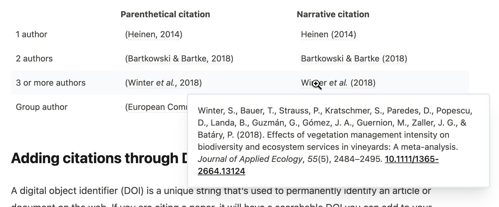
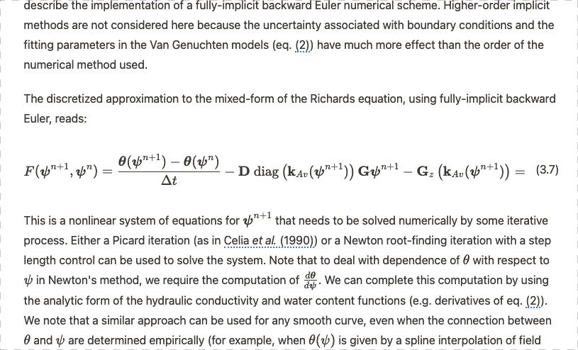
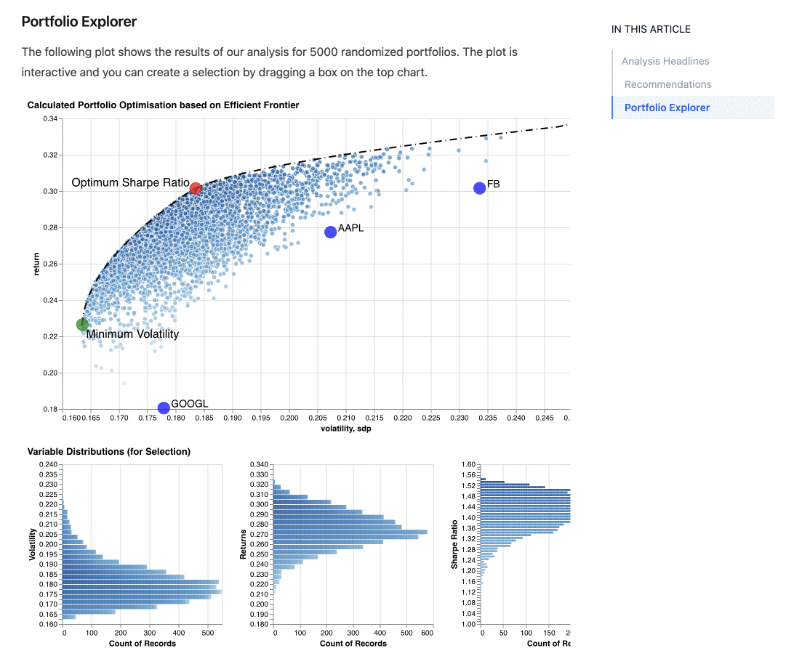
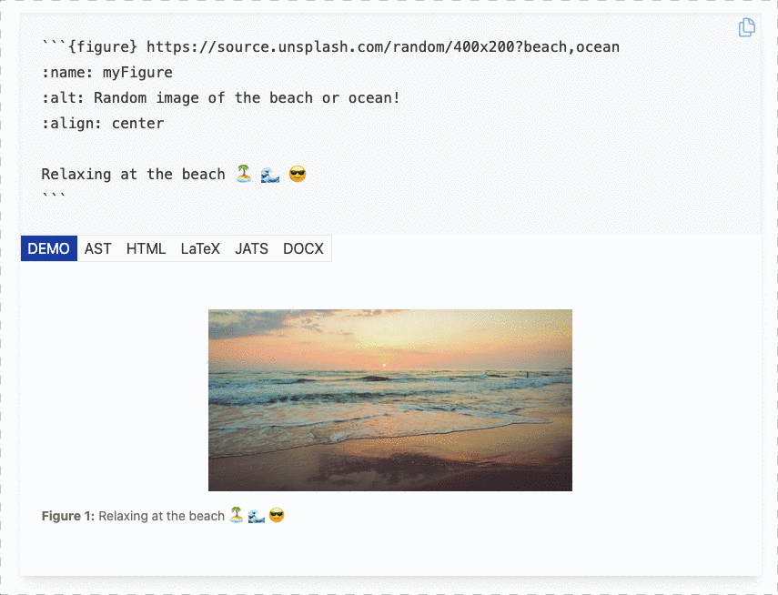

How to MyST, without being mystified 🧙
A tutorial to evolve markdown documents and notebooks into structured data
Authors: Rowan Cockett1,2
Affiliations: 1Executable Books, 2 Curvenote
License: CC-BY
Abstract
We introduce, a set of open-source, community-driven tools for MyST Markdown (myst.tools) designed for scientific communication, including a powerful authoring framework that supports blogs, online books, scientific papers, reports and journals articles.
Background
Scientific communication today is designed around print documents and pay-walled access to content. Over the last decade, the open-science movement has accelerated the use of pre-print services and data archives that are vastly improving the accessibility of scientific content. However, these systems are not designed for communicating modern scientific outputs, which encompasses so much more than a paper-centric model of the scholarly literature.
We believe how we share and communicate scientific knowledge should evolve past the status quo of print-based publishing and all the limitations of paper.
The communication and collaboration tools that we are building in the Project Jupyter are built to follow the FORCE11 recommendations (Bourne et al., 2012). Specifically:
- rethink the unit and form of scholarly publication;
- develop tools and technologies to better support the scholarly lifecycle; and
- add data, software, and workflows as first-class research objects.
By bringing professional, high-quality tools for science communication into the research lifecycle, we believe we can improve the collection and preservation of scholarly metadata (citations, cross-references, annotations, etc.) as well as open up new ways to communicate science with interactive figures & equations, computation, and reactivity.
The tools that are being built by the Project Jupyter are focused on introducing a new Markup language, MyST (Markedly Structured Text), that works seamlessly with the Jupyter community to enhance and promote a new path to document creation and publishing for next-generation scientific textbooks, blogs, and lectures. Our team is currently supported by the Sloan Foundation, (Grant #9231).
MyST enables rich content generation and is a powerful format for scientific and technical communication. JupyterBook uses MyST and has broad adoption in publishing tutorials and educational content focused around Jupyter Notebooks.
The components behind Jupyter Book are downloaded 30,000 times a day, with 750K downloads last month.
The current toolchain used by JupyterBook is based on Sphinx, which is an open-source documentation system used in many software projects, especially in the Python ecosystem. mystjs is a similar tool to Sphinx, however, designed specifically for scientific communication. In addition to building websites, mystjs can also help you create scientific PDFs, Microsoft Word documents, and JATS XML (used in scientific publishing).
mystjs uses existing, modern web-frameworks in place of the Sphinx build system. These tools come out-of-the-box with prefetching for faster navigation, smaller network payloads through modern web-bundlers, image optimization, partial-page refresh through single-page application. Many of these features, performance and accessibility improvements are difficult, if not impossible, to create inside of the Sphinx build system.
In 2022, the Executable Books team started work to document the specification behind the markup language, called myst-spec, this work has enabled other tools and implementations in the scientific ecosystem to build on MyST (e.g. scientific authoring tools, and documentation systems).
The mystjs ecosystem was developed as a collaboration between Curvenote, 2i2c and the ExecutableBooks team. The initial version of mystjs was originally release by Curvenote as the Curvenote CLI under the MIT license, and transferred to the ExecutableBooks team in October 2022. The goal of the project is to enable the same rich content and authoring experiences that Sphinx allows for software documentation, with a focus on web-first technologies (Javascript), interactivity, accessibility, scientific references (e.g. DOIs and other persistent IDs), professional PDF outputs, and JATS XML documents for scientific archiving.
MyST Project
In this paper we introduce mystjs, which allows the popular MyST Markdown syntax to be run directly in a web browser, opening up new workflows for components to be used in web-based editors, directly in Jupyter and in JupyterLite. The libraries work with current MyST Markdown documents/projects and can export to LaTeX/PDF, Microsoft Word and JATS as well as multiple website templates using a modern React-based renderer. There are currently over 400 scientific journals that are supported through templates, with new LaTeX templates that can be added easily using a Jinja-based templating package, called jtex.
In our paper we will give an overview of the MyST ecosystem, how to use MyST tools in conjunction with existing Jupyter Notebooks, markdown documents, and JupyterBooks to create professional PDFs and interactive websites, books, blogs and scientific articles. We give special attention to the additions around structured data, standards in publishing (e.g. efforts in representing Notebooks as JATS XML), rich frontmatter and bringing cross-references and persistent IDs to life with interactive hover-tooltips (ORCID, RoR, RRIDs, DOIs, intersphinx, wikipedia, JATS, GitHub code, and more!). This rich metadata and structured content can be used directly to improve science communication both through self-publishing books, blogs, and lab websites — as well as journals that incorporate Jupyter Notebooks.
Features of MyST
MyST is focused on scientific writing, and ensuring that citations are first class both for writing and for reading (see Figure 1).
 Figure 1: Citations are rendered with a popup directly inline.
MyST aims to show as much information in context as possible, for example, Figure 2 shows a reading experience for a referenced equation: you can immediately click on the reference, see the equation, all without loosing any context – ultimately saving you time. Head et al. (2021) found that these ideas both improved the overall reading experience of articles as well as allowed researchers to answer questions about an article 26% faster when compared to a traditional PDF!
 Figure 2: In context cross-references improve the reading experience.
One of the important underlying goals of practicing reproducibility, sharing more of the methods and data behind a scientific work so that other researchers can both verify as well as build upon your findings. One of the exciting ways to pull for reproducibility is to make documents directly linked to data and computation! In Figure 3, we are showing outputs from a Jupyter Notebook directly part of the published scientific narrative.
 Figure 3: Embedding data, interactivity and computation into a MyST article.
To drive all of these features, the contents of a MyST document needs to be well defined. This is critical for powering interactive hovers, linked citations, and compatibility with scientific publishing standards like the Journal Article Metadata Tag Suite (JATS). We have an emerging specification for MyST, myst-spec, that aims to capture this information and transform it between many different formats, like PDF, Word, JSON, and JATS XML (Figure 4). This specification is arrived at through a community-centric MyST Enhancement Proposal (MEP) process.
 Figure 4: The data behind MyST is structured, which means we can transform it into many different document types and use it to power all sorts of exciting features!
One of the common forms of scientific communication today is through PDF documents. MyST has excellent support for creating PDF documents, using a data-driven templating library called jtex. The document in Figure 5 was created using MyST!
 Figure 5: A PDF rendering through MyST.
Figure 5: A PDF rendering through MyST.
Conclusion
There are many opportunities to improve open-science communication, to make it more interactive, accessible, more reproducible, and both produce and use structured data throughout the research-writing process. The mystjs ecosystem of tools is designed with structured data at its core. We would love if you gave it a try – learn to get started at https://myst.tools.
References
Bourne, Philip E., Clark, Timothy W., Dale, Robert, De Waard, Anita, Herman, Ivan, Hovy, Eduard H., Shotton, David. (2012)“Improving The Future of Research Communications and e-Scholarship”. FORCE11. doi:10.4230/DAGMAN.1.1.41
Head, A., Lo, K., Kang, D., Fok, R., Skjonsberg, S., Weld, D. S., & Hearst, M. A. (2021, May). Augmenting Scientific Papers with Just-in-Time, Position-Sensitive Definitions of Terms and Symbols. Proceedings of the 2021 CHI Conference on Human Factors in Computing Systems. 10.1145/3411764.3445648